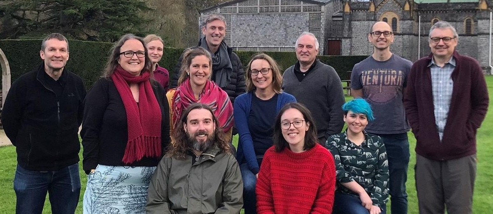

PenCHORD#
PenCHORD (the Peninsula Collaboration for Health Operational Research and Data Science) are specialists in helping healthcare professionals, commissioners and patients make informed decisions about change in the NHS. The team uses open and advanced quantitative techniques to model healthcare services and predict the impact of change.
PenCHORD was established in 2011 by Prof. Martin Pitt in order to bridge the implementation gap between academia and the NHS. Today, our focus is still the same, with PenCHORD being co-led by Tom Monks, Dan Chalk, and Michael Allen.
PenCHORD works with, and teaches, exclusively open source tools (such as Python, R, Julia) and promotes Open Science. In 2024, PenCHORD won two HDR-UK Reproducibility Recognition awards for our open and accessible work, one for our Health Service Modelling Associates (HSMA) programme, and the other for our Stroke Audit Machine Learning (SAMueL) work.
PenCHORD is supported by the National Institute for Health Research Applied Research Collaboration South West Peninsula (‘PenARC’).

Vision#
We develop, use, share, and teach innovative applied open data science and modelling methods to help NHS healthcare providers deliver higher quality healthcare to more patients.
Strategy#
We do this by:
Focussing our work on that which helps NHS healthcare providers deliver higher quality healthcare to more patients.
Disseminating innovative, and published, research into open data science and modelling methods.
Developing our Open Science processes and infrastructure.
Making our models available to NHS users as Web Apps, and teaching and supporting those in the NHS to do the same.
Developing capacity within the NHS to use open data science and modelling methods.
Training the next generation of scientists to apply open data science and modelling methods to help NHS healthcare providers.
Collaborating with others committed to, or with a desire to learn, open data science and modelling methods.
Attracting people wishing to develop open data science and modelling methods to help NHS healthcare providers.
Promoting the adoption of open modelling and data science in both health services research and healthcare providers.
Working closely with patient representatives, and promoting involvement of patients in research via our teaching activities.
Disclaimer#
Work referenced in this website is independent research supported by the National Institute for Health Research. The views expressed are those of the authors and not necessarily those of the National Institute for Health Research or the Department of Health and Social Care.